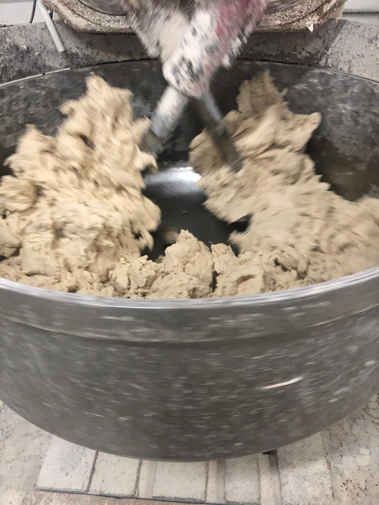
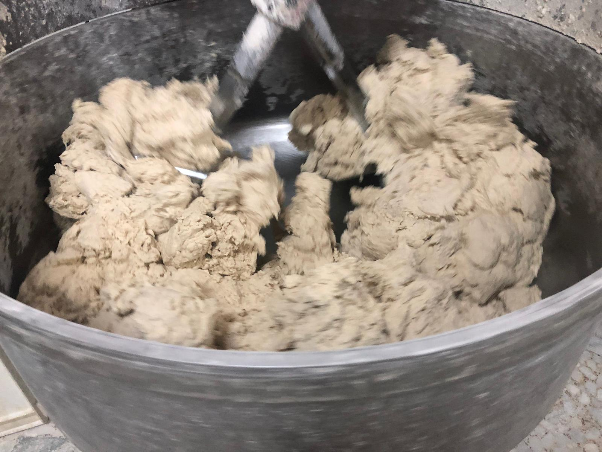
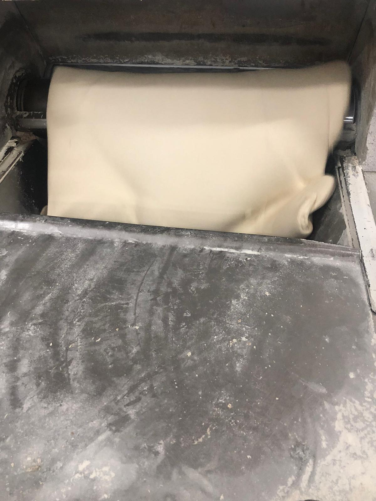
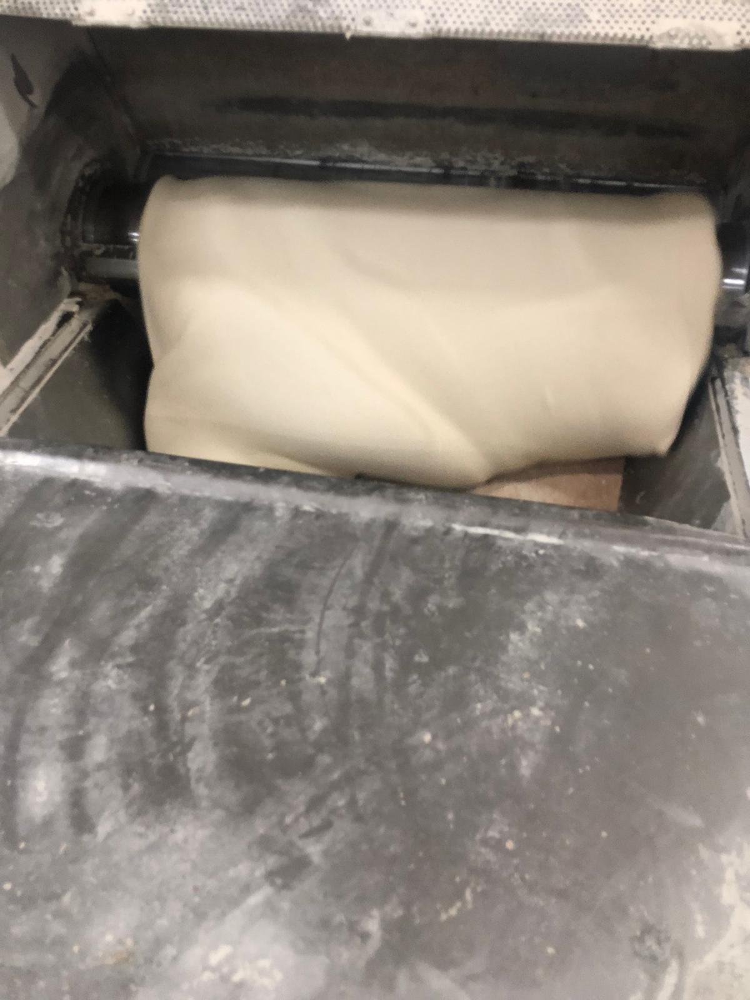

Somos una empresa dedicada a la fabricación de pan y productos de panadería. Fundada en 2004, GELSUR S.L. ha crecido hasta convertirse en un referente en el sector, ofreciendo productos de alta calidad y un servicio excepcional a nuestros clientes. Servimos a una amplia gama de clientes, desde pequeñas tiendas de barrio hasta grandes cadenas de supermercados, y nos enorgullece ser una parte integral de la comunidad local.




Nuestro proceso de fabricación se basa en la utilización de ingredientes de la más alta calidad y técnicas tradicionales de panadería. Cada producto es elaborado con dedicación y pasión, garantizando un sabor excepcional y una textura perfecta. Nuestro equipo de panaderos expertos trabaja con esmero para crear una amplia variedad de productos, desde panes artesanales hasta bollería y pastelería. Además, nos comprometemos a mantener altos estándares de higiene y seguridad alimentaria en todas las etapas de producción, asegurando que nuestros productos sean seguros y saludables para nuestros clientes. En GELSUR S.L., creemos que la calidad es la clave del éxito, y nos esforzamos por superar las expectativas de nuestros clientes en cada producto que ofrecemos.